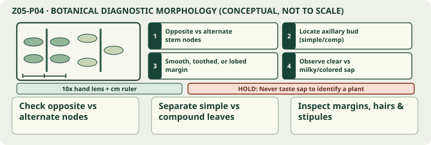

Z05-P04 · Wild foods and poisonous lookalikes · New manuscript
Botanical Morphology: Leaf Arrangement, Margins and Venation
Read core vegetative anatomy—opposite, alternate, whorled, simple, and compound leaves—accurately before consulting regional keys.
When it applies · Field observation of woody shrubs, trees, vines, and herbaceous stems.
Equipment · 10x hand lens, metric ruler, regional flora glossary.

Actions
- Verify node arrangement first—opposite (paired across the stem), alternate (staggered), whorled (three or more per node), or basal rosette—checking multiple healthy stems.[B20]
- Locate the axillary bud at the stem junction to separate a true simple leaf from leaflets on a compound leaf, preventing confusion between poison ivy, ash, and elderberry.[B12, B20]
- Document leaf margins (smooth/entire, toothed/serrated, lobed), venation (parallel, pinnate, palmate), and presence of milky or clear sap without tasting.[B10, B20]
Failure recognition · Miscounting compound leaflets as opposite simple leaves misidentifies poison ivy, poison sumac, or buckthorn.[B12, B15, B20]
Verify · Node arrangement, bud location, margin type, venation, and sap color are documented cleanly with a ruler.[B20]
Stop or change course · Stop vegetative identification when frost, browsing, or immaturity removes diagnostic leaves and buds.[B20]
Evidence and editorial notes
- B10 · National Capital Poison Center · Poisonous Plants and Berries Overview (Current web edition)
- Section: Poisonous plants, berries, and dose-dependent pediatric risk · Conditions: Household, trailside, and wild berries, seeds, and foliage
Support: Many attractive wild berries, seeds, and roots contain cardiac glycosides, alkaloids, or oxalates that cause rapid toxicity, especially in children.
Limitations: Never sample unknown plants; recognition and consumption suitability remain separate decisions. · Conflicting evidence: None noted.
Editorial note: Separates recognition from consumption. · Specialist reviewer: Clinical toxicologist and botanist
Primary source · checked 2026-11-25 - B12 · NIOSH / CDC · Poisonous Plants: Hemlock, Dermatitis, and Field Hazards (Current web edition)
- Section: Toxic plant dermatitis and hemlock contact/ingestion hazards · Conditions: Field work around poison ivy, poison sumac, wild parsnip, and hemlocks
Support: Urushiol oils in Toxicodendron species cause severe allergic contact dermatitis; burning vines aerosolizes toxic smoke that damages lungs.
Limitations: Never burn unknown vines or brush piles; wash exposed skin promptly with cool water and soap. · Conflicting evidence: None noted.
Editorial note: Covers Z05 contact/inhalation plant hazards. · Specialist reviewer: Occupational health and botanist
Primary source · checked 2026-11-25 - B15 · University of Minnesota Extension · Common Buckthorn Identification and Toxic Fruit (Current web edition)
- Section: Common buckthorn (Rhamnus cathartica) dark berry lookalike · Conditions: Minnesota woodlands, edges, and thickets
Support: Common buckthorn bears clusters of dark purplish-black berries with sub-opposite leaves and terminal twig spines; fruit causes severe gastrointestinal purging.
Limitations: Frequently confused with chokecherry, serviceberry, or elderberry by casual observers; verify leaf arrangement, thorns, and seed count. · Conflicting evidence: None noted.
Editorial note: Key Minnesota dark-berry toxic lookalike. · Specialist reviewer: UMN Extension botanist
Primary source · checked 2026-11-25 - B20 · USDA Forest Service · Celebrating Wildflowers: Plant Identification and Conservation (Current web edition)
- Section: Botanical morphology terminology and multi-character keys · Conditions: Observing leaf venation, margins, flower symmetry, and fruit anatomy
Support: Accurate plant identification requires confirming multiple independent morphological characters at the observed life stage.
Limitations: Missing flowers, fruit, or underground parts require stopping identification rather than guessing. · Conflicting evidence: None noted.
Editorial note: Enforces multi-feature identification standard. · Specialist reviewer: Plant taxonomist
Primary source · checked 2026-11-25
Source lineage · New manuscript (Z05 P19-C plant morphology) · Classification · New manuscript.